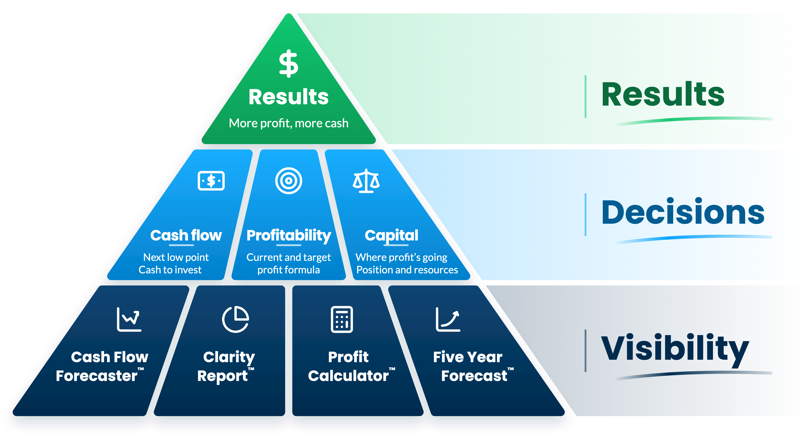
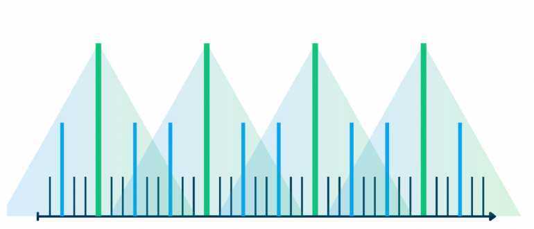
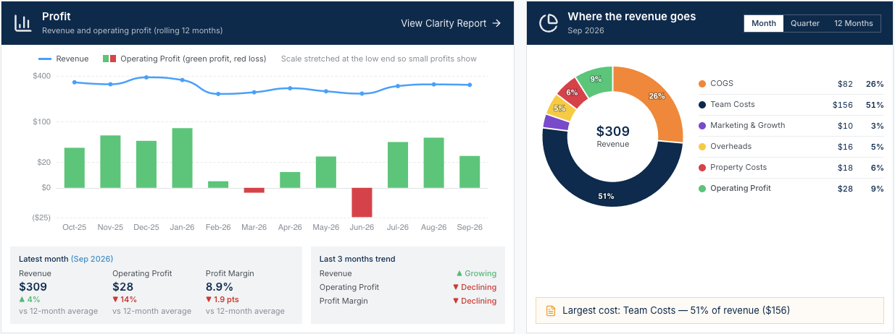
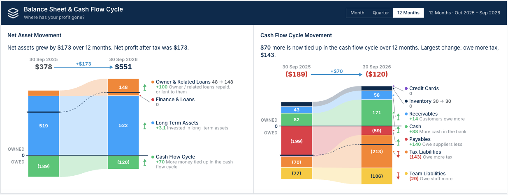
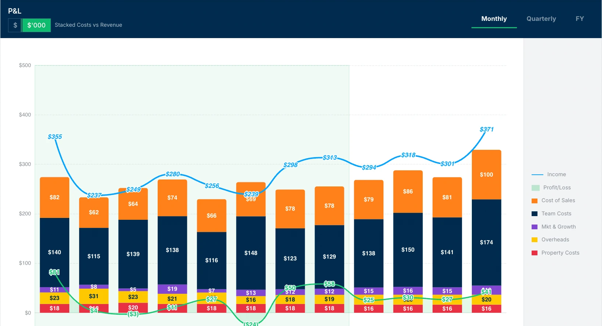
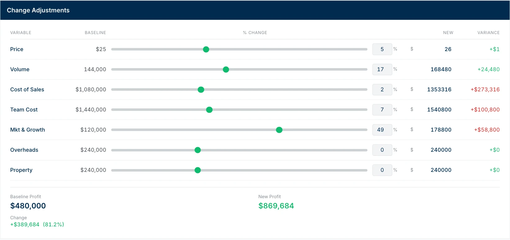
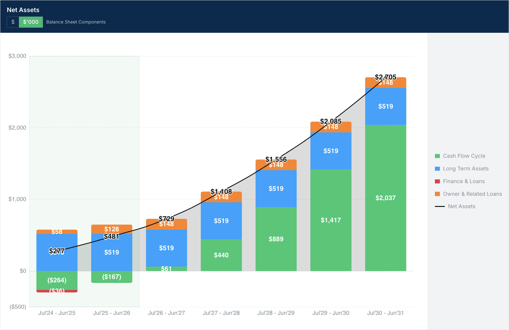
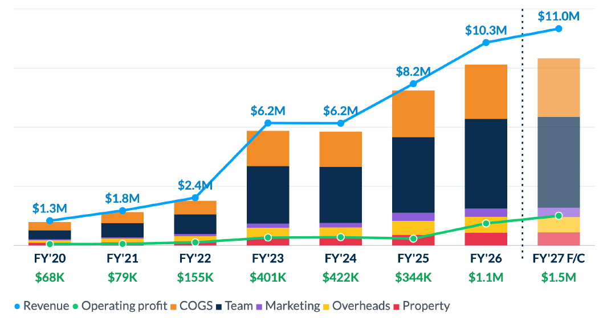

We install your financial operating system, then teach you how to run it.
For owners of $1M to $5M businesses who have outgrown the bank balance and gut feel. See what's coming, know where the money's going, and make the right call when it matters.
The Profit Analysttheprofitanalyst.com
The problem
Your business has grown. The way you run the numbers hasn't.
When you started, the bank balance and your gut were enough. You had a bookkeeper keeping the books, an accountant at tax time, and the occasional conversation in between. It got you here.
What got you here
Check the bank balance
Trust your gut
Bookkeeper records what happened
Accountant tells you how you went, months later
→
Where you are now
More staff, more customers, more costs
More cash moving every week
Bigger decisions, with more riding on them
Less room for getting it wrong
At seven figures, the old way starts costing you
The mistakes don't go away as you grow. They just get more expensive. And they show up in two ways.
Shocks that arrive too late
Things you could have fixed, if you'd seen them coming.
The tax bill that wipes out the cash you thought you had
The five-week pay month that drains the account
Profit on paper that never shows up in the bank
The hire or the purchase you couldn't really afford
Wins you never got
Upside you should have had along the way.
The price rise you held off on for two years
The investment you were too nervous to make
Margin quietly leaking out of a cost you weren't watching
The growth you could have funded, if you'd known it was safe
At this level, you can't keep playing like that. That's why you need a financial operating system installed.
Who's in the decision seat?
You have a scorekeeper and a referee. Someone has to make the calls.
Once you're over seven figures, every seat in your finance team needs to be filled. Most owners have two of the three.
Your bookkeeper
The scorekeeper
Writes down what happened. Keeps the books accurate.
Your accountant
The referee
Knows the rules you play by. Keeps you compliant with the tax office.
You
The decision maker
Reads the numbers, looks ahead and makes the calls that grow the business.
The decision seat isn't about looking backwards at financials. Yes, you look back to understand what happened. But the real job is looking forward: having forecasts and a clear plan for where you're going, so you can make the right decisions on the way there.
You could pay someone senior to sit in that seat for you. But then you're renting the one capability you most need to own. Every time a big decision comes up, you're back on the phone, waiting.
This isn't about turning you into an accountant
It's about turning you into a business owner who can read the language of business, which is numbers, and use it to make great decisions. That's what this program does.
The answer · The Profit Analyst Method™
A financial operating system, built by a CFO who became an owner
I spent years as a CFO. Then I bought small businesses of my own, and quickly learned that big-company finance doesn't fit a busy owner. So I built my own simple system.
It keeps my time in finance world to a minimum, and puts the critical information in front of me exactly when I need it to make the key decisions. That's what drives the results. And it works the same way in every business.

Visibility
Four simple tools on your real numbers, so you can see what's happening and what's coming.
Decisions
A short set of questions you ask on repeat. The answers tell you your next right move.
Results
Better decisions, made earlier, compound. More profit, more cash.
You can't get to results without decisions, and you can't make good decisions without visibility. So we build it from the ground up.
The method · The Profit & Cash Flow Cycle
Three sets of numbers. One profit and cash flow engine.
Your P&L, balance sheet and cash flow usually live in accounting world, as reports that turn up after the fact. Through the eyes of an owner making decisions, they become the three things that drive the business: profitability, capital and cash flow. Each one answers two questions, and each one feeds the next.
1 · Profitability (P&L)
Make more profit
How is the business making profit now, and how will it make profit at your target? The gap shows exactly what to change: price, volume, margins or costs.
2 · Capital (Balance sheet)
Find where it went
Profit lands on your balance sheet, not always in the bank. It gets tied up in unpaid invoices, stock, debt repayments and drawings. See where, and you can turn more of it into cash.
3 · Cash flow
Stay safe, then grow
Manage cash tightly and look ahead. See your next low point coming, then know what cash is free to fund profitable growth. And the cycle goes again.
Run the cycle on repeat and you dial the business up: more profit, more of it in the bank, and the cash to fund what's next.
What we do
We install it, teach it and make it run on repeat
We're CFOs who became small business owners and built our own simple system to make running a business easier. We've been doing this for years, and we've coached hundreds of businesses across dozens of industries.
Whatever your industry, everyone's playing the same game:
1
Maximise your profitability
2
Play it safe within your cash flow
3
Know where the money's going
4
Make better decisions
Install the system
Our finance team connects your numbers and installs your four tools. Your forecast is kept up to date every week.
Teach you to use it
Coaching and short training so you can read your numbers, ask the right questions and make the call.
Embed the rhythm
Simple weekly, monthly and quarterly routines, so it keeps running long after the 90 days.
Your profit and cash flow rhythm

Weekly · 10 mins
Know your cash
Your cash, your next low point, any cash risks.
Monthly · 1 hour
Know how you're going
How you're performing, why, and where profit went.
Quarterly · 2 hours
Set the strategy
Let your numbers guide where you're heading.
Once it's running, it takes about two hours a month to stay completely on top of your numbers. Few things you do in your business will give you more leverage than that.
The Profit Analyst software
The software we wanted didn't exist. So we built it.
Everything out there was made for accountants. Too complex, all backwards looking, or built for over-analysis. None of it gave a business owner what they actually need to make a decision.
So we built our own. It pulls your numbers straight out of your accounting software and turns them into something simple enough for any owner to read and use.
Your numbers
Xero, MYOB or QuickBooks
→
Made simple
The Profit Analyst software
→
You decide
Your next right move


From your dashboard: your profit, where every dollar of revenue goes, and where your profit has gone.
Everything in one place, on your live numbers
Your cash flow forecast, updated weekly.
Your Clarity Reports, with your financial statements as simple, colour-coded charts.
All our profit tools, working off your real numbers, so you can test a decision before you make it.
Your Five Year Forecast, built on the same simple numbers and carried forward into the future.
One login. No spreadsheets to maintain. We keep it up to date for you.
Inside the software
Four tools. One simple set of numbers.
Each tool answers one question an owner actually asks.
Am I going to be okay?
Weekly Cash Flow Forecaster™
Cash in, cash out and your closing balance, week by week. See the next low point coming and what's driving it, so you can plan your way through it.

How did we go, and where did the profit go?
Monthly Clarity Report™
Your P&L and balance sheet as colour-coded charts. Income against each cost, month by month, so you can see where you're winning and where you're losing.
What's my next right move?
Profit Calculator™
Move price, volume or any cost and see the impact on profit straight away. Test the price rise, the new hire or the marketing spend before you commit to it.

The scenario: prices up 5%, volume up 17%, with more spent on team and marketing to deliver it. The waterfall shows what each move does, from $480K profit to $870K.

Are we on track for our big goals?
Five Year Forecast™
Your numbers carried five years forward. See if you're on track, and work backwards from the goal to the targets you need to hit this year.
Example business. Example numbers.
The results
From one loss-making bar to $1M+ profit
This is my own business. Same system, same rhythm, every quarter for seven years: find the constraint, model the move, check the cash flow can handle it, make the decision.

FY19 · Year one
$1.1M revenue
Losing $150K a year
FY26
$10.3M revenue
$1.1M operating profit
FY27 forecast
$11M revenue
$1.5M operating profit
And for the owners we coach
We meet owners where they are, install the system and teach them to make better decisions. The results follow.
Isaac
Plumber
Before
$3M revenue · $90K profit
→
Now
$6M revenue · 20% margin
Angus
Consultancy
Before
$3M revenue · $150K profit
→
12 months later
$4M revenue · $500K profit
Mick
Pub owner
Before
$1.5M revenue · breaking even
→
Within 90 days
On track for six-figure profit
We've done it in our own businesses and in hundreds of others. We know we can do it for you.
Your first 90 days
Training wheels on. Then you ride it yourself.
We install it. We hold your hand. We show you how to use it, so that by day 90 you're running it on your own.
Weeks 1 to 2
We install it
Your numbers connected and your four tools live within 14 days. Your Profit Strategy Session with Gavin sets your plan.
Weeks 3 to 12
You learn to use it
Coaching, training and the rhythm, with your real numbers every week.
Day 90 and beyond
You run it
You make the decisions. We keep your tools running in the background.
Your system and numbers
Installed and kept up to date for you.
Weekly Cash Flow Forecaster™, updated every Monday
Monthly Clarity Report™, your P&L and balance sheet in plain English
Profit Calculator™
Five Year Forecast™
Your own dashboard, one login
Your 1:1 coaching
Private calls on your business.
Onboarding Call
Profit Strategy Session with Gavin
Cash Flow Coaching Call with your coach
Two Momentum Calls with your coach
Support by email and messenger
Your rhythm
Plugged into how we run our numbers.
Weekly Q&A coaching with Gavin
Weekly cash flow coaching
Profit Workshops and Monthly Financial Reviews
Quarterly Strategic Session
Short training modules, anytime
During the 90 days, plan on about ten minutes a week for your forecast and around an hour a week on a coaching call or working on your numbers. Every group call is recorded.
The game we play
Find your next $100,000 in profit
Every month inside The Profit Analyst, we play the same game. We start it together at your Profit Strategy Session with Gavin.
Step 1
Understand your numbers
→
Step 2
Find your next right move
→
The result
Add $100,000 in annual profit
We back ourselves on it. We'll make sure your cash flow can pay for the program, and more importantly, we'll show you how to get a 10x return on your investment.
The Profit & Cash Flow Guarantee
We only keep going if this is a win for you. At your Profit Strategy Session with Gavin, we'll map out a clear plan to add $100,000 in annual profit, more than 10 times your investment. We'll also check your Weekly Cash Flow Forecaster™ to make sure your business can pay for the rest of the program.
If either answer is no, or we don't believe we can help you win, we stop there. You won't pay another cent, and you keep your roadmap and your forecast.
To qualify, give us access to your accounting software within 7 days of signing, and attend your Onboarding Call and your Profit Strategy Session.
The investment
What is it costing you not to have this already?
Before you look at the price, ask yourself:
How much profit is leaking out right now that you can't see?
How much better would your results be if you'd made the big calls faster and with more confidence?
What did the last cash shock or tax surprise really cost you?
How far ahead would your business be by now?
That gap is what not knowing your numbers is costing you. On a $1M business, this program is less than 1% of revenue. The upside of getting even one or two decisions right is many times that.
The 90-day program
$9,000
+ GST
Everything we install and teach you, for the full 90 days.
Most popular
3 monthly payments
$3,000
per month + GST
Spread across your 90 days, so it fits your cash flow.
Pay in full
$8,100
one payment + GST
Save 10% ($900) when you pay upfront.
After your 90 days
You continue on Profit Coaching from day 91, so there's no gap. Switch options or cancel any time with 30 days' notice.
Profit Tools
$300 + GST / month
Your tools kept running, with email support.
Profit Coaching
$900 + GST / month
Tools plus weekly coaching, workshops and a monthly 1:1 with a coach.
Profit Partner
$1,500 + GST / month
Everything, plus a quarterly strategic session with Gavin. 10 places.
All prices in AUD. Each extra company with its own books gets its own Profit Tools at $300 + GST a month.
Who this is for
Built for seven-figure business owners
$1M to $5M
annual revenue
Xero, MYOB or QuickBooks
for your accounting
Ready
to own your numbers
If you'd rather hand this to someone else
That's fine. Go and do that. This program is for owners who want to understand their own numbers and make their own calls. If you try outsourcing it and find you're still waiting on someone else every time a decision comes up, we'll be here.
Your next step
The choice is yours.
Option 1
"I'm in."
Reply and tell us you're ready. We'll send your agreement and book your Onboarding Call.
Option 2
"I have questions."
Reply and we'll book a quick 15-minute call to answer them.
Option 3
"Not right now."
All good. We'd rather you start when you're ready to take ownership of your numbers.
Visibility, then decisions, then results. 80% is good enough. Let's find your next right move.